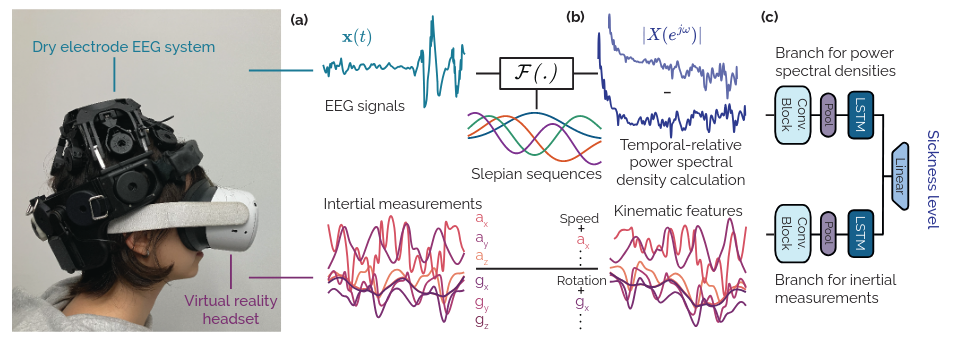

Cybersickness (dizziness, nausea) is dynamic, but it is usually scored only once, after immersion, with subjective questionnaires (SSQ) in motion-restricted setups. Those labels are coarse and retrospective and cannot follow how sickness rises during free interaction.
16 participants cycled through a Unity VR environment (Quest 2) for about two hours while two streams were recorded passively: dry-electrode EEG (DSI-24) and the headset's head-motion / inertial signals. Continuous ground-truth sickness was logged by each participant on a joystick and verified against the post-session SSQ; the peak sickness level reached ranged from 0.1 to 0.85 across people.
EEG is split into 3-second windows and its power spectrum is estimated with a multitaper method over \(K\) orthogonal Slepian sequences \(g_k\), which trades a little bias for much lower variance than a single periodogram: \[ S(f) = \frac{1}{K} \sum_{k=0}^{K-1} \left| \Delta t \sum_{n=0}^{N-1} g_k(n)\, x(n)\, e^{-i 2\pi f n \Delta t} \right|^2. \] A "temporal-relative" PSD (TR-PSD) then subtracts the average of the first three windows, so the model learns changes over time rather than absolute levels. The EEG 1/f spectral slope correlates with sickness (\(r = 0.75 \pm 0.10\)).
A ConvLSTM with one encoder per modality (EEG TR-PSD and kinematic features) predicts a continuous sickness level, trained leave-one-subject-out so the numbers reflect unseen users. EEG with TR-PSD is the strongest single modality, and adding kinematics gives the best overall model:
| Input | Pre-processing | MAE | MSE | Acc |
|---|---|---|---|---|
| Frames | 3D ConvNet | 0.890 | 1.042 | 14.9% |
| IMU | kinematic | 0.857 | 0.162 | 27.1% |
| EEG | filtering | 0.841 | 0.182 | 44.3% |
| EEG | filtering + PSD | 0.751 | 0.143 | 59.0% |
| EEG | filtering + TR-PSD | 0.620 | 0.109 | 69.4% |
| EEG + IMU | TR-PSD + IMU | 0.638 | 0.092 | 76.8% |
TR-PSD adds over 12% accuracy versus a plain multitaper PSD, and a 3-second window is optimal (76.8%, vs 57% at 1s and 62% at 10s). The pipeline is light enough to run on an ARM Cortex-M microcontroller (about 246 ms, 3.4 mJ, under 512 KB flash and 128 KB RAM per segment). The dataset and code are released. Published in IEEE TVCG, 2025; with ETH Zürich's Sensing, Interaction & Perception Lab.